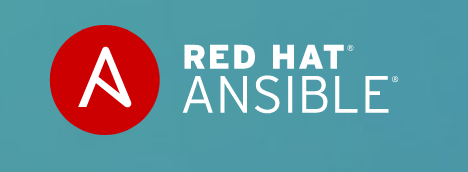
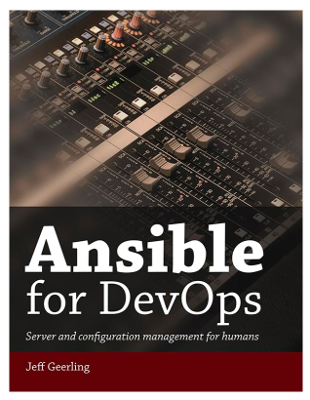

Take control of your hosting using Ansible
Andre Baumeier
Michael Lenahan
Hubert Burda Media
Take back control™ of your technical environment

We are the internal development team at ...
Burda Home
... we host and manage these websites ...

Traffic (official data)
Unique Users 3,39 Mio.
Visits 7,28 Mio.
87.000+ recipes.
source: https://bcn.burda.de/marken/national/titel/daskochrezept-online/

Unique Users 3,40 Mio.
Page Impressions 13,67 Mio.
https://bcn.burda.de/marken/national/titel/mein-schoener-garten-online/
Unique Users 480.000
Page Impressions 2,30 Mio.
https://bcn.burda.de/marken/national/titel/das-haus-online/

Built on top of new infrastructure. A Thunder based multisite.
One of the many new projects. Launched about 5 new projects in 2018.
Our technology stack
Our situation (before 2019)
Hosting with expensive "cloud solutions" provider with vendor lock-in
Poor performance
Inflexible, "one size fits all", leading to expensive workarounds
Our solution (since 2019)
Own the infrastructure and have it all in code
Work with a managed hosting provider
Define our own services, based on our own needs
75% reduction in hosting costs
Better performance
Better developer experience
Why Ansible?
We compared it with: Puppet, Chef, Saltstack
✅ No server setup needed (only server req is Python)
✅ Connects using SSH and runs scripts on server
✅ Scripts can be run over and over again
✅ Easy to learn, very well documented. Stable API
🤪 DEMO TIME! 🤪
Follow along by going to the demo directory in this repo
(1) Get 3 VMs running
3 empty ubuntu1804 boxes
cd demo/VMs && vagrant up
(2) Tell Ansible about your servers
... in an inventory.yml file ...
cd demo/ansible && cat inventory.yml
ansible/inventory.yml
---
all:
vars:
ansible_ssh_user: vagrant
ansible_ssh_private_key_file: ~/.vagrant.d/insecure_private_key
ansible_python_interpreter: python3
websites:
hosts:
website01.test:
website02.test:
databases:
hosts:
database01.test
Ad-hoc commands
ping module
docs.ansible.com/ansible/latest/modules/ping_module.htmlcommand module
docs.ansible.com/ansible/latest/modules/command_module.htmlUsing a playbook to provision servers
Let's install apache on our web servers
https://github.com/geerlingguy/ansible-role-apache$ ansible-galaxy --roles-path=roles install geerlingguy.apache
Jeff Geerling's book

Other cool features
Secrets management (Vault, 1Password ...)
Ansible Tower/Ansible AWX (Control Server/GUI)
Vagrant integration for local development
Docker integration
Final Slide!
Ansible is modular.
Ansible is mature technology.